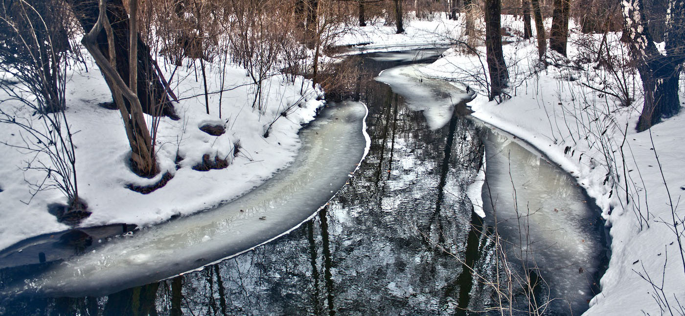

<!--gallery content-->




<!--------------------- Gallery Html Containers------------------->

<div id="content">
    <div class="mygallery">
	<div class="tn3 album">
	    <h4>Fixed Dimensions</h4>
	    <div class="tn3 description">Images with fixed dimensions</div>
	    <div class="tn3 thumb">images/35x35/1.jpg</div>
	    <ol>
		<li>
		    <h4>Hohensalzburg Castle</h4>
		    <div class="tn3 description">Salzburg, Austria</div>
		    <a href="images/620x378/1.jpg">
			
		    </a>
		</li>
		<li>
		    <h4>Isolated sandy cove</h4>
		    <div class="tn3 description">Zakynthos island, Greece</div>
		    <a href="images/620x378/2.jpg">
			
		    </a>
		</li>
		<li>
		    <h4>A view from the Old Town</h4>
		    <div class="tn3 description">Herceg Novi, Montenegro</div>
		    <a href="images/620x378/3.jpg">
			
		    </a>
		</li>
		<li>
		    <h4>Walls of the Old Town</h4>
		    <div class="tn3 description">Kotor, Montenegro</div>
		    <a href="images/620x378/4.jpg">
			
		    </a>
		</li>
		<li>
		    <h4>Boat in the port</h4>
		    <div class="tn3 description">Sousse, Tunis</div>
		    <a href="images/620x378/5.jpg">
			
		    </a>
		</li>
		<li>
		    <h4>Wall of the Jain temple</h4>
		    <div class="tn3 description">Jaisalmer, India</div>
		    <a href="images/620x378/6.jpg">
			
		    </a>
		</li>
		<li>
		    <h4>City park</h4>
		    <div class="tn3 description">Negotin, Serbia</div>
		    <a href="images/620x378/7.jpg">
			
		    </a>
		</li>
		<li>
		    <h4>Taj Mahal mausoleum</h4>
		    <div class="tn3 description">Agra, India</div>
		    <a href="images/620x378/8.jpg">
			
		    </a>
		</li>
		<li>
		    <h4>Zante Port</h4>
		    <div class="tn3 description">Zakynthos, Greece</div>
		    <a href="images/620x378/9.jpg">
			
		    </a>
		</li>
		<li>
		    <h4>Rustovo Monastery</h4>
		    <div class="tn3 description">Budva, Montenegro</div>
		    <a href="images/620x378/10.jpg">
			
		    </a>
		</li>
		<li>
		    <h4>The Mezquita, Cathedral and former Great Mosque</h4>
		    <div class="tn3 description">Cordoba, Spain</div>
		    <a href="images/620x378/11.jpg">
			
		    </a>
		</li>
		<li>
		    <h4>Wine Cellars</h4>
		    <div class="tn3 description">Rajac, Serbia</div>
		    <a href="images/620x378/12.jpg">
			
		    </a>
		</li>
	    </ol>
	</div>
    </div>
    <div id="desc">
	<p>Note that 'blinds' and 'grid' transition types work only if the images are of same size and not scaled. If you choose album with large images and because 'crop' options is turned on, you will see default transition('slide') instead of 'blinds' and 'grid' types.</p>
    </div>
</div>

